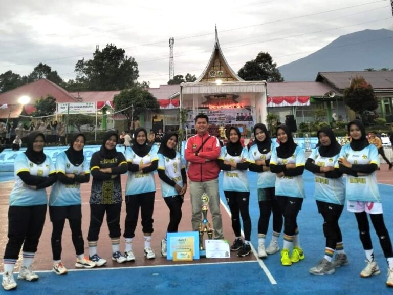
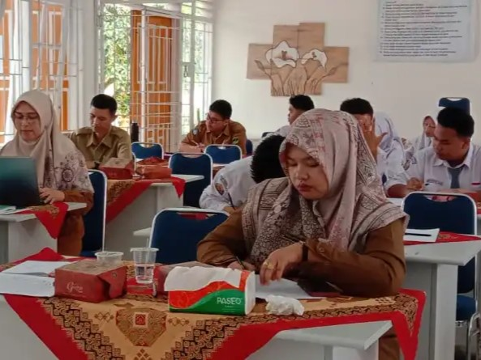
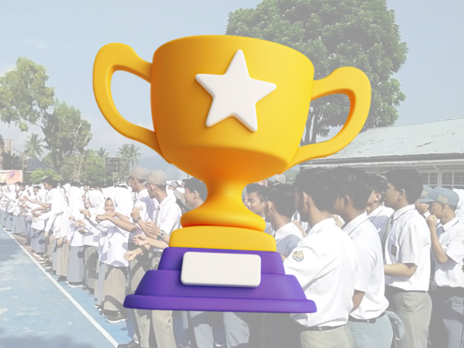

Bersama Kita Tumbuh, Berprestasi, dan Menginspirasi
Selamat datang di SMAN 1 Batipuh, tempat di mana pendidikan berkualitas berpadu dengan pembentukan karakter unggul. Kami berkomitmen untuk mencetak generasi yang religius, cerdas, kompetitif, cinta tanah air, bergotong royong, mandiri, dan peduli terhadap lingkungan. Bergabunglah bersama kami untuk masa depan yang gemilang.
Kami mengutamakan pengembangan potensi siswa secara optimal melalui kurikulum yang terintegrasi dan inovatif.
Kami membentuk siswa yang disiplin, bertanggung jawab, dan memiliki integritas.
SMAN 1 Batipuh memberikan ruang bagi siswa untuk berekspresi melalui seni, olahraga, dan kewirausahaan.
Kami mendorong pemanfaatan lingkungan secara produktif dan berwawasan keberlanjutan, termasuk inovasi daur ulang limbah.
Assalamualaikum warahmatullahi wabarakatuh.
Puji syukur kehadirat Allah SWT atas segala rahmat dan karunia-Nya, sehingga telah terwujudnya kehadiran website resmi SMAN 1 Batipuh. Website ini merupakan sebagai media informasi sekolah secara digital.
Tujuan dari website ini adalah untuk memberikan akses informasi yang mudah dan cepat tentang segala hal yang berkaitan dengan SMAN 1 Batipuh, baik bagi peserta didik, guru, orang tua, maupun masyarakat luas. Dengan adanya website ini, diharapkan komunikasi antara seluruh stakeholder sekolah dapat terjalin lebih efektif. Melalui website ini nantinya peserta didik dapat mengakses informasi tentang berbagai kegiatan ekstrakurikuler, lomba, dan informasi lainnya.
Harapan ke depan, website ini akan terus dikembangkan dan diperbarui agar semakin informatif dan menarik. Kami juga berharap website ini dapat menjadi sarana untuk meningkatkan kualitas pendidikan di SMAN 1 Batipuh.
Terima kasih kepada seluruh pihak yang telah berkontribusi dalam pembuatan dan pengembangan website ini, terutama tim IT sekolah. Semoga website ini dapat bermanfaat bagi kita semua.
Wassalamualaikum warahmatullahi wabarakatuh.
Hendra Arinal, S.Pd,M.Si
Kepala Sekolah
Disukai oleh osis_sman1 dan 1.245 lainnya
sman1batipuh Dokumentasi kegiatan siswa dan aktivitas sekolah terbaru
Lihat semua 120 komentar
2 JAM YANG LALUDisukai oleh siswa_hebat dan 980 lainnya
sman1batipuh Prestasi dan kegiatan terbaru siswa SMAN 1 Batipuh
Lihat semua 86 komentar
5 JAM YANG LALUProgram unggulan untuk mendukung visi dan misi sekolah.
Memperkuat nilai-nilai keagamaan melalui kegiatan seperti kajian agama, pembinaan spiritual, dan peringatan hari besar keagamaan.
Bimbingan intensif bagi siswa untuk mempersiapkan Ujian Nasional, UTBK, dan masuk perguruan tinggi unggulan.
Mendukung kreativitas siswa melalui seni musik, tari tradisional, drama, dan pameran seni yang rutin diadakan.
Fokus pada pengelolaan lingkungan sekolah yang asri dan mendukung kegiatan daur ulang limbah menjadi produk kreatif.
SMAN 1 Batipuh dikenal sebagai sekolah yang sukses mencetak siswa berprestasi di tingkat kabupaten, provinsi, hingga nasional dalam bidang akademik, seni, dan olahraga.
Dengan fasilitas seperti ruang belajar nyaman, laboratorium, dan program ekstrakurikuler yang beragam, SMAN 1 Batipuh memberikan lingkungan terbaik untuk mendukung perkembangan siswa secara holistik.
Interaksi antara guru, siswa, dan masyarakat sekolah yang hangat dan inklusif menciptakan suasana belajar yang penuh motivasi, mendorong siswa untuk terus tumbuh dan menginspirasi.

Tim voli putri SMAN 1 Batipuh kembali menorehkan prestasi membanggakan dengan berhasil meraih Juara II dalam Kejuaraan Bola Voli Antar SMA se-Sumatera Barat, Riau, dan Jambi yang digelar dalam rangka...
Selengkapnya
SMA Negeri 1 Batipuh Gelar Pelatihan Jurnalistik Sebanyak 40 guru dan siswa SMA Negeri 1 Batipuh mengikuti Pelatihan Jurnalistik, Selasa (21/5/2024), di Ruang Labor sekolah setempat. Kegiatan ini...
Selengkapnya
SMAN 1 Batipuh terletak di Nagari Batipuh Baruah, Kec. Batipuh, Kab.Tanah Datar, Provinsi Sumatera Barat yang memiliki siswa-siswi hebat yang mampu bersaing untuk menampilkan yang terbaik di setiap...
Selengkapnya